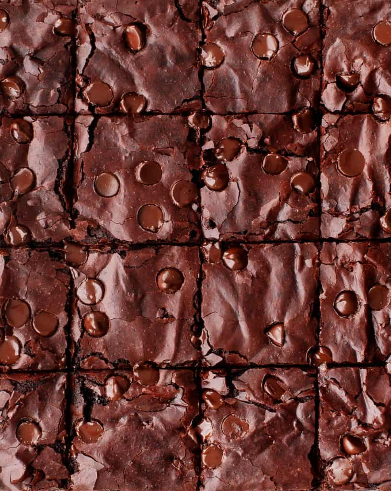

The BEST brownie recipe! With crispy edges, fudgy middles, and rich chocolate flavor, these homemade brownies will disappear in no time.
Store any leftovers in an airtight container at room temperature for up to 3 days. They also freeze well for up to a month. Last time I made these, I doubled the recipe and stored the second batch in the freezer. It was so fun to have them on hand for a quick and easy dessert or afternoon treat!